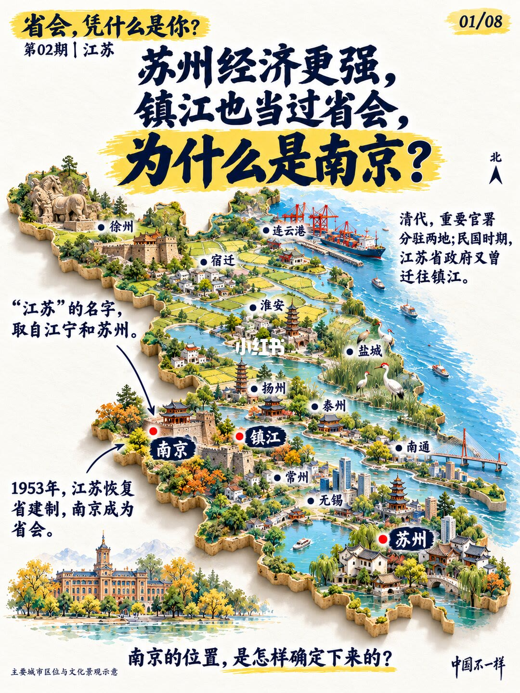
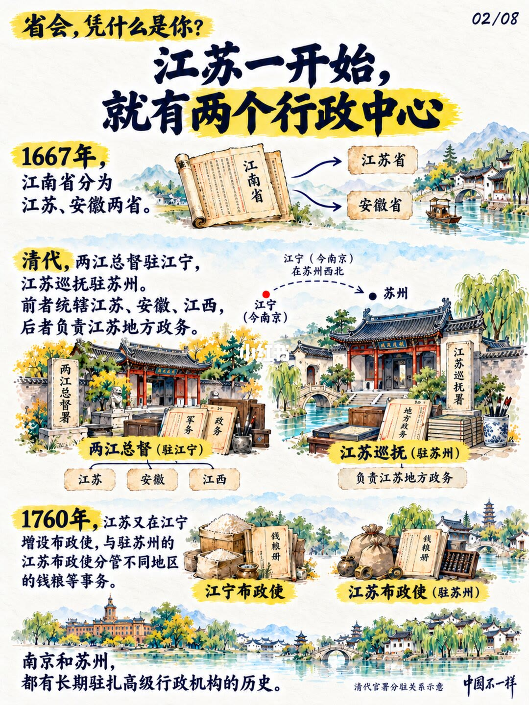
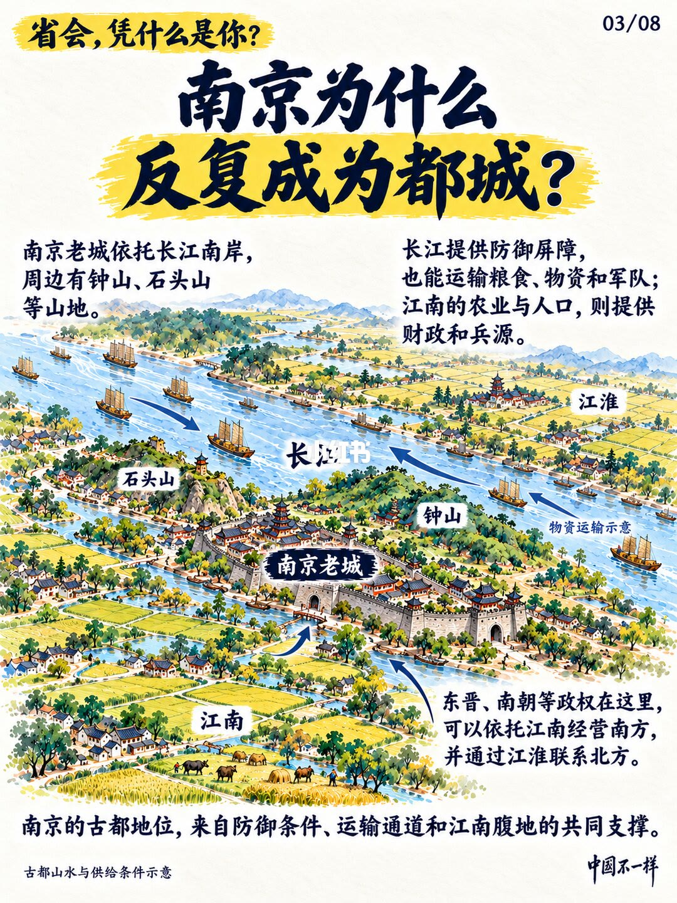
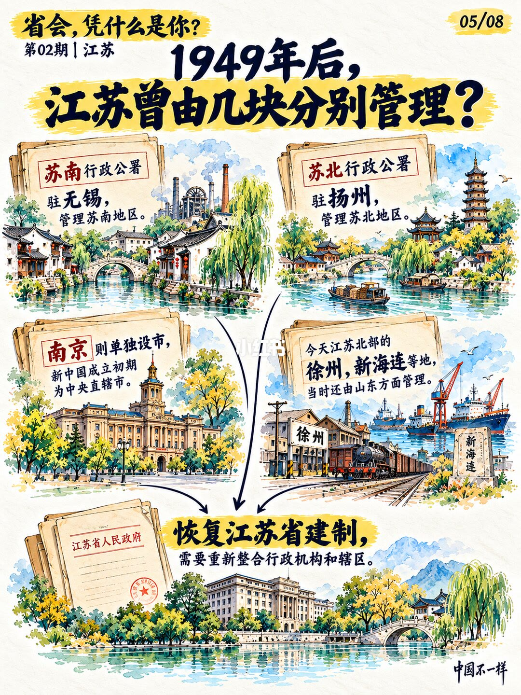
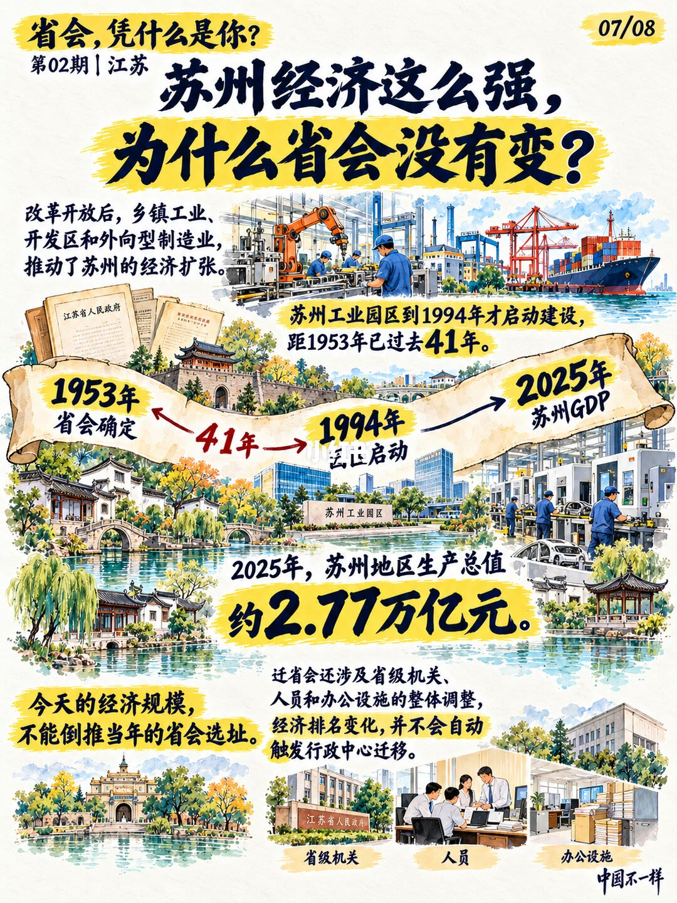

第 1 页：苏州更强、镇江也当过省会，为何是南京？

1/8封面设问：1953 年江苏恢复省建制，南京为省会；「江苏」之名来自江宁与苏州。
Opening: why Nanjing as capital when Suzhou is richer and Zhenjiang once hosted the government.
第 2 页：一开始就有两个行政中心

2/81667 江南分省；清两江总督驻江宁、江苏巡抚驻苏州；1760 江宁再设布政使，与苏州分管钱粮。
From the start: dual centers—Liangjiang governor in Jiangning, Jiangsu governor in Suzhou.
第 3 页：南京为何反复成为都城？

3/8老城依长江南岸，钟山石头山环护；长江既是屏障也运粮运兵；江南腹地供财赋兵源。
Defense + Yangtze transport + Jiangnan hinterland explain repeated capitals.
第 4 页：南京当首都，省会反而搬走
4/81927 国民政府定都南京并设特别市；1929 年 2 月省政府迁镇江——首都与省会并非始终重合。
When Nanjing was national capital, the provincial seat moved to Zhenjiang in 1929.
第 5 页：1949 年后曾分块管理

5/8苏南署驻无锡、苏北署驻扬州；南京一度中央直辖市；徐州、新海连等地当时由山东方面管理，恢复建省需再整合。
Post-1949 split: Sunan, Subei, Nanjing municipality, and northern areas under Shandong.
第 6 页：1952 一封信明确省会安排
6/8周恩来致柯庆施：苏南苏北合并后省会仍设南京，并谈军事、文化、大学与工业；1953-01-01 江苏省人民政府成立。
Zhou Enlai’s 1952 letter kept Nanjing as capital; province restored 1 Jan 1953.
第 7 页：苏州经济强，为何省会不变？

7/8开放后乡镇工业、开发区与外向制造推高苏州；2025 GDP 约 2.77 万亿。经济规模不能回溯改写当年选址；迁省会要动整套机关人事场地。
Strong Suzhou GDP doesn’t auto-move the capital—organs, people, and facilities must move.
第 8 页：南京大学群里的「大拆分」
8/81952 院系调整：南大与金陵大学底子重配为新南大、南京工学院（今东南大学）、南京师范学院（今南师大）、南京农学院（今南农）。
1952 department reorganization split into today’s NJU, SEU, NJNU, and NAU lines.